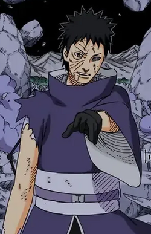

Obito Uchiha (Japanese: うちは オビト, Hepburn: Uchiha Obito), also known by his alias Tobi (トビ), is a fictional character and one of the main antagonists in Masashi Kishimoto's manga (and anime adaptation) Naruto, being the primary instigator at fault for the tragic backstory of series protagonist Naruto Uzumaki, whose personality and motivations are nearly identical to those of Obito's younger self, making them foils. He is first introduced in a "Kakashi Chronicle" side story, as a young ninja who sacrifices himself to save his friends (Kakashi Hatake and Rin Nohara) from a cave-in. Although he was believed to have died in the 3rd Great Ninja War, Obito is later revealed as the real leader of the organization known as the Akatsuki, mainly acting behind the scenes for a majority of the group's tenure. He uses the alias of Tobi and later that of his benefactor, Madara Uchiha, and conceals his true identity with masks. As the leader of Akatsuki, Obito seeks to harness the power of the Tailed Beasts in order to cast a genjutsu that will put all of humanity into an idealized dream state forever, having lost faith in the real world following Rin's death. Kishimoto created Obito early in the series to explore his relationship with Kakashi and explain how his friend possessed the eye technique of Sharingan (写輪眼 寫輪眼; lit. "Copy Wheel Eye", English manga: "Mirror Wheel Eye"), unique to the Uchiha clan. Since Obito kept his identity secret, Kishimoto teased fans to anticipate the true identity of Tobi (most notably when the actual Madara Uchiha was revealed, which shocked fans and his voice actor). Critical reception of Obito's character has been praised, primarily for his tragic backstory and his fight scenes as an adult. In 2023, Obito was ranked as the 11th most popular character in the results of the Naruto Worldwide Character Popularity Vote.[1] Obito and his varied personas have appeared in Naruto video games and animated adaptations.
Obito Uchiha
video/edit
is that you? obito? ...